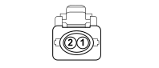

N077 REGOLATORE DI PRESSIONE COMBUSTIBILE (ENGINE)
- Path
- Electrical equipment > N077 REGOLATORE DI PRESSIONE COMBUSTIBILE (ENGINE)
- Kind
- topic
- Applies to
- engines: 1.3 JTD 16v; all production periods
- Interactive page
- https://sloeber94.github.io/elrnDB-fPnd/en/#/169003533
Applies to: engines: 1.3 JTD 16v; all production periods

Wiring | Colour |
|---|---|
NERO (black) |
Pin | Cable | Destination | |||
|---|---|---|---|---|---|
Sec.. | Colour | Node | Connect. | Pin | |
1 | 0,75 | HN (grey with black stripe) | 4 | ||
2 | 0,75 | AR (light blue with red stripe) | 34 | ||